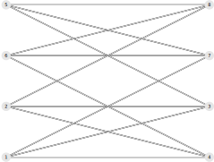
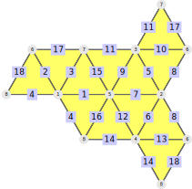

One of the central questions about polygonal complexes and simplicial surfaces (for the detailed definitions see Chapter 2) is whether they can be embedded into \(ℝ^3\). This is a very hard question and can currently only be solved for small examples.
Therefore the SimplicialSurface-package does not contain methods to compute general embeddings. This chapter contains some prerequisite methods in the direction of the general embedding-problem.
Section 16.1 deals with properties that make embeddings impossible. Section 16.2 contains a method to draw the net of a polygonal complex.
If an embedding of a polygonal complex maps edges to straight lines, it is defined by the images of its vertices alone. This restricts the possible incidence structures:
Two edges that are incident to the same vertices would be mapped to the same line, contradicting the injectivity of the embedding. The same argument applies to two faces with the same vertices.
Those cases are called edge-anomalies and face-anomalies. Both are appearing in the example of an open bag:
gap> bag := SimplicialSurfaceByUpwardIncidence( [ [1,2], [1,3,4], [2,3,4] ], > [ [1,2], [1,2], [2], [1] ]);; gap> IsAnomalyFree( bag ); false gap> EdgeAnomalyClasses( bag ); [ [ 1 ], [ 2 ], [ 3, 4 ] ] gap> FaceAnomalyClasses( bag ); [ [ 1, 2 ] ]
‣ IsAnomalyFree( complex ) | ( property ) |
‣ IsVertexFaithful( complex ) | ( property ) |
Returns: true or false
Check whether the given polygonal complex contains anomalies, i.e. pairs of edges or pairs of faces that are incident to the same vertices.
As examples, consider a tetrahedron (without any anomalies) and the open bag from the start of section 16.1 (with anomalies):
gap> IsAnomalyFree( Tetrahedron() ); true gap> IsAnomalyFree( bag ); false gap> IsVertexFaithful( Tetrahedron() ); true gap> IsVertexFaithful( bag ); false
‣ EdgeAnomalyClasses( complex ) | ( attribute ) |
‣ EdgeAnomalyClassOfEdge( complex, edge ) | ( operation ) |
‣ EdgeAnomalyClassOfEdgeNC( complex, edge ) | ( operation ) |
Returns: a set of sets of positive integers
Return the set of all edge-anomaly-classes of the given polygonal complex. Two edges of complex lie in the same edge-anomaly-class if they are incident to the same vertices.
The method EdgeAnomalyClassOfEdge only returns the edge-anomaly-class of the given edge (as set). The NC-version does not check if edge is an edge of complex.
Consider the open bag from the start of section 16.1:
gap> EdgeAnomalyClassOfEdge( bag, 1 ); [ 1 ] gap> EdgeAnomalyClassOfEdge( bag, 3 ); [ 3, 4 ] gap> EdgeAnomalyClasses( bag ); [ [ 1 ], [ 2 ], [ 3, 4 ] ]
‣ FaceAnomalyClasses( complex ) | ( attribute ) |
‣ FaceAnomalyClassOfFace( complex, face ) | ( operation ) |
‣ FaceAnomalyClassOfFaceNC( complex, face ) | ( operation ) |
Returns: a set of sets of positive integers
Return the set of all face-anomaly-classes of the given polygonal complex. Two faces of complex lie in the same face-anomaly-class if they are incident to the same vertices.
The method FaceAnomalyClassOfFace only returns the face-anomaly-class of the given face (as set). The NC-version does not check if face is a face of complex.
Consider the open bag from the start of section 16.1:
gap> FaceAnomalyClassOfFace( bag, 1 ); [ 1, 2 ] gap> FaceAnomalyClasses( bag ); [ [ 1, 2 ] ]
While it is very hard to compute an embedding into \(ℝ^3\) it is quite easy to draw the net of a ramified polygonal surface into a plane.
For example, the net of an octahedron can be drawn like this:
gap> oct := Octahedron();; gap> DrawSurfaceToTikz( oct, "Octahedron_example" );;
This will write a file Octahedron_example.tex that contains the net of the octahedron, written in TikZ:
To customize this drawing, a record is used (called the printRecord). Each call of the drawing method creates one of those:
gap> pr := DrawSurfaceToTikz( oct, "Octahedron_example" );;
Maybe the edges should not be labelled. Then they can be turned off:
gap> pr.edgeLabelsActive := false;;
The colours can also be changed very easily (especially if all colours should be changed at once). For example, let's make all vertices green:
gap> pr.vertexColours := "green";;
After compiling we get the following net.
gap> DrawSurfaceToTikz( oct, "Octahedron_recoloured.tex", pr );;
It should be mentioned that all of these calls modify their printRecord.
Since it is impractical to always call LaTeX for every customization we can call it directly from within GAP:
gap> pr.compileLaTeX := true;;
Still the picture looks quite small. To see how big it currently is, we can look at the parameter scale:
gap> pr.scale; 2
So the default scale is 2. Since there is a lot of space left, we can set the scale to 3. Furthermore we label the faces with roman numbers.
gap> pr.scale := 3;; gap> pr.faceLabels := ["I","II","III","IV","V","VI","VII","VIII"];; gap> DrawSurfaceToTikz( oct, "Octahedron_customized.tex", pr );;
Next we would like to change the shapes of the triangles. To do so we need to know how long the edges are.
gap> pr.edgeLabelsActive := true;; gap> DrawSurfaceToTikz( oct, "Octahedron_edgeLabels", pr );; gap> pr.edgeLengths; [ 1, 1, 1, 1, 1, 1, 1, 1, 1, 1, 1, 1 ]
We want to make the angles around vertex 1 larger, for example:
gap> pr.edgeLengths := [ 1, 1, 1, 1, 1.5, 1.5, 1, 1.5, 1, 1.5, 1, 1 ];;
Since the printRecord also remembers the angles, this information has to be discarded before the recomputation.
gap> Unbind( pr.angles ); gap> DrawSurfaceToTikz( oct, "Octahedron_reshaped", pr );
We can see that the program chooses to display a different net to avoid self-intersections. If the system can not easily avoid intersections it will split up the surface and draw these components separately. This feature can be turned off by setting the parameter avoidIntersections to false.
‣ DrawSurfaceToTikz( ramSurf, fileName[, printRecord] ) | ( operation ) |
Returns: a record
Draw the net of the given ramSurf into a tex-file (using TikZ). An introduction to the use of this method (along with several examples) can be found at the start of section 16.2.
If the given fileName does not end in .tex the ending .tex will be added to it.
The given file will be overwritten without asking if it already exists. If you don't have permission to write in that file, this method will throw an error.
The particulars of the drawing are determined by the given printRecord. If this is not given, the default settings are used.
The printRecord will be modified and returned by this method. It contains the data to recreate the drawing of the surface.
There are several parameters to change the output of this method, from cosmetic changes to exactly controlling in which order the faces are drawn. There are the following classes of parameters:
Colours (16.2-2): Change the colours of vertices, edges and faces.
Labels (16.2-3): Modify the labels of vertices, edges and faces.
Lengths and angles (16.2-4): These parameters control the size and shape of the drawing and the individual faces.
Draw order (16.2-5): They control the order in which the faces are drawn.
Output control (16.2-6): Modify how the LaTeX-output behaves and how much information is printed to the console.
Data representation (16.2-7): These parameters can't be influenced by the user and contain the information to recreate the drawing.
This subsection covers how to change the colours of vertices, edges and faces in the drawings from DrawSurfaceToTikz (16.2-1). It covers the following parameters:
vertexColours: Modify the colours of the vertices (the default colour is orange).
edgeColours: Modify the colours of the edges (the default colour is gray).
faceColours: Modify the colours of the face (the default colour is a darker shade of yellow).
We will exemplify them with the example of a cube. Here the cube has holes in the vertex, edge and face sets to make it more clear how the parameters work:
gap> cube := PolygonalComplexByDownwardIncidence([ [ 1, 2 ], [ 2, 3 ], [ 3, 4 ], > [ 1, 4 ], [ 2, 7 ], , [ 3, 8 ], [ 4, 9 ], [ 1, 6 ], [ 7, 8 ] ,[ 8, 9 ], > [ 6, 9 ], [ 6, 7 ] ],[ [ 1, 2, 3, 4 ], ,[ 1, 5, 9, 13 ], [ 2, 5, 7, 10 ], > [ 4, 8, 9, 12 ], [ 3, 7, 8, 11 ], [ 10, 11, 12, 13 ] ]);; gap> DrawSurfaceToTikz(cube, "Cube_example");;
vertexColours: Modifies the colours of the vertices. The colours are given in a list colours such that colours[v] is the colour of the vertex v. If vertex v is not in the surface, the colour is skipped. The colours are strings that are recognizable by LaTeX.
It is possible to leave some vertex colours unbound - those will be coloured with the default vertex colour (orange).
gap> pr := rec( vertexColours := > ["red", "blue", "green",, "pink", "black!20!yellow"] );; gap> DrawSurfaceToTikz(cube, "Cube_vertexColouredLocal", pr);;

Instead of giving an entire list it is also possible to give just one string defining a new colour for all vertices. It will be internally converted into a list.
gap> pr := rec( vertexColours := "blue!60!white" );; gap> DrawSurfaceToTikz(cube, "Cube_vertexColouredGlobal", pr);;
edgeColours: Modifies the colours of the edges. The colours are given in a list colours such that colours[e] is the colour of the edge e. If edge e is not in the surface, the colour is skipped. The colours are strings that are recognizable by LaTeX.
Is is possible to leave some edge colours unbound - those will be coloured with the default edge colour (gray).
gap> pr := rec( edgeColours := > [,,,,"red", "purple", "blue", "green!80!black"] );; gap> DrawSurfaceToTikz( cube, "Cube_edgeColouredLocal", pr );;

Instead of giving an entire list it is also possible to give just one string defining a new colour for all edges. It will be internally converted into a list.
gap> pr := rec( edgeColours := "red" );; gap> DrawSurfaceToTikz( cube, "Cube_edgeColouredGlobal", pr );;
faceColours: Modifies the colours of the faces. The colours are given in a list colours such that colours[f] is the colour of the face f. If face f is not in the surface, the colour is skipped. It is possible to leave some face colours unbound - those will be coloured with the default face colour (a darker shape of yellow, the custom colour \\faceColorY).
The colours can be strings that are recognized by LaTeX, but they can also be one of six pre-defined colours of this package:
gap> pr := rec( faceColours := ["\\faceColorY", "\\faceColorB", > "\\faceColorC", "\\faceColorR", "\\faceColorG", "\\faceColorO"] );; gap> DrawSurfaceToTikz( cube, "Cube_faceColouredLocal", pr );;
Instead of giving an entire list it is also possible to give just one string defining a new colour for all faces. It will be internally converted into a list.
gap> pr := rec( faceColours := "olive!20!white" );; gap> DrawSurfaceToTikz( cube, "Cube_faceColouredGlobal", pr );;
This subsection covers the parameters that change the labels of vertices, edges and faces in the drawings of DrawSurfaceToTikz (16.2-1).
vertexLabelsActive: Turn the vertex labels on or off (by default they are turned on).
vertexLabels: Modify the vertex labels (by default they are labelled by their number).
edgeLabelsActive: Turn the edge labels on or off (by default they are turned on).
edgeLabels: Modify the edge labels (by default they are labelled by their number).
faceLabelsActive: Turn the face labels on or off (by default they are turned on).
faceLabels: Modify the face labels (by default they are labelled by their number).
We will exemplify these parameters on the example of a tetrahedron. Here the tetrahedron has holes in the vertex, edge and face sets to make it more clear how the parameters work:
gap> tetra := SimplicialSurfaceByDownwardIncidence([ [ 1, 3 ], [ 1, 4 ], [ 1, 5 ], > [ 3, 4 ], ,[ 3, 5 ], [ 4, 5 ] ], [ [ 1, 2, 4 ], [ 1, 3, 6 ], , > [ 4, 6, 7 ], [ 2, 3, 7 ] ]);; gap> DrawSurfaceToTikz( tetra, "Tetrahedron_example" );;
vertexLabelsActive: By default all vertices are labelled. If they should not be labelled, this parameter can be set to false.
gap> pr := rec( vertexLabelsActive := false );; gap> DrawSurfaceToTikz( tetra, "Tetrahedron_vertexLabelsOff", pr);;
vertexLabels: By default the vertices are labelled by their number. This can be changed with this parameter (if you just want to turn off the labels, use vertexLabelsActive instead).
The labels are given as a list labels such that labels[v] is the label of the vertex v. If vertex v is not in the surface, the label is skipped. It is possible to leave some vertex labels unbound - those will be labelled with their default label.
gap> pr := rec( vertexLabels := ["V_1", "X", , "++"] );; gap> DrawSurfaceToTikz( tetra, "Tetrahedron_vertexLabels", pr);;
edgeLabelsActive: By default all edges are labelled. If they should not be labelled, this parameter can be set to false.
gap> pr := rec( edgeLabelsActive := false );; gap> DrawSurfaceToTikz( tetra, "Tetrahedron_edgeLabelsOff", pr);;
edgeLabels: By default the edges are labelled by their number. This can be changed with this parameter (if you just want to turn off the labels, use edgeLabelsActive instead).
The labels are given as a list labels such that labels[e] is the label of the edge e. If edge e is not in the surface, the label is skipped. It is possible to leave some edge labels unbound - those will be labelled with their default label.
gap> pr := rec( edgeLabels := ["a", , "e_3", , "?"] );; gap> DrawSurfaceToTikz( tetra, "Tetrahedron_edgeLabels", pr);;
faceLabelsActive: By default all faces are labelled. If they should not be labelled, this parameter can be set to false.
gap> pr := rec( faceLabelsActive := false );; gap> DrawSurfaceToTikz( tetra, "Tetrahedron_faceLabelsOff", pr);;
faceLabels: By default the faces are labelled by their number. This can be changed with this parameter (if you just want to turn off the labels, use faceLabelsActive instead).
The labels are given as a list labels such that labels[f] is the label of the face f. If face f is not in the surface, the label is skipped. It is possible to leave some face labels unbound - those will be labelled with their default label.
gap> pr := rec( faceLabels := ["I", "f_2", "42", ,] );; gap> DrawSurfaceToTikz( tetra, "Tetrahedron_faceLabels", pr);;
This subsection explains the parameters that modify the size and shapes of the faces that are drawn by the method DrawSurfaceToTikz (16.2-1). More specifically it explains the following parameters:
scale: Globally scales the picture. The default is 2.
edgeLengths: Is a list lengths such that lengths[e] is the length of the edge e. By default, each edge has length 1.
angles: This parameter controls the inner angles of the faces. The angles are stored as a list angles such that angles[f][v] represents the angle in face f at vertex v. The angle is represented as a list [sin,cos] with the sine and cosine of the angle.
floatAccuracy: Internal parameter to decide when two floats are regarded as equal. The default is 0.001. Usually it should not be necessary to modify this value.
By default, all faces are drawn as regular polygons. To choose different polygons their edge lengths and inner angles have to be defined (exception: for triangles it is sufficient to define the edge lengths, as long as the angles are not set).
If the given information is inconsistent an error is thrown.
We will exemplify the first two parameters on the example of a tetrahedron. Here the tetrahedron has holes in the vertex, edge and face sets to make it more clear how the parameters work:
gap> tetra := SimplicialSurfaceByDownwardIncidence([ [ 1, 3 ], [ 1, 4 ], [ 1, 5 ], > [ 3, 4 ], ,[ 3, 5 ], [ 4, 5 ] ], [ [ 1, 2, 4 ], [ 1, 3, 6 ], , > [ 4, 6, 7 ], [ 2, 3, 7 ] ]);; gap> DrawSurfaceToTikz( tetra, "Tetrahedron_example" );;
scale: By default the scale is 2. This can be changed with this parameter.
gap> pr := rec( scale := 1.5 );; gap> DrawSurfaceToTikz( tetra, "Tetrahedron_rescaled", pr);;
edgeLengths: By default each edge has length 1. This can be changed with this parameter.
The lengths are given as a list edgeLengths such that edgeLengths[e] is the length of the edge e. If edge e is not in the surface, the length is skipped. It is possible to leave some edge lengths unbound - those will have length 1.
gap> pr := rec( edgeLengths := [1.5, 1.5, 1, 1.5, 2, 1, 1] );; gap> DrawSurfaceToTikz( tetra, "Tetrahedron_edgeLengths", pr);;
angles: The angles can be changed with this parameter.
The angles are given as a list angles such that angles[f][v] is the inner angle of vertex v in face f. The angle is represented as a list [sin,cos] with the sine and cosine of the angle. In the case of a triangle, it is not possible to change the angles without specifying the edge lengths, as the angles do not describe a unique triangle.
We will exemplify this parameter on the example of a rectangle example. In the case of a rectangle, changing the angles does not change the edge lengths.
gap> rectangle:=PolygonalSurfaceByVerticesInFaces([[1,2,3,4]]);; gap> pr:=DrawSurfaceToTikz( rectangle, "Rectangle_example" );;

gap> pr.angles:=[[[ 0.866025, 0.5 ],[ 0.866025, -0.5 ],[ 0.866025, 0.5 ], > [ 0.866025, -0.5 ]]];; gap> DrawSurfaceToTikz( rectangle, "Rectangle_angles", pr);;
This subsection is concerned with the parameters that control the draw order of the drawings from DrawSurfaceToTikz (16.2-1). The drawing order is decided by the following parameters:
avoidIntersections: If this parameter is true (the default) intersections in the drawing are avoided if possible. If there is a conflict between a given drawing order and the intersection avoidance, the avoidance will prevail!
startingFaces: After drawing this list contains one face from each strongly connected component. These are the first faces that were drawn from these components. That means that the vertex coordinates of these faces are the first to be calculated. By giving this list manually the first drawn faces can be customized. The function will auto-correct the spelling startingFace into startingFaces if there is no entry for startingFaces.
edgeDrawOrder: After drawing this list contains a list of edges for each strongly connected component. For each component, this list explains the order in which these edges were completed (an edge is completed if both adjacent faces are drawn). This means that this parameter controls which edges are drawn once and which edges need to be drawn twice because they cannot be completed. This can be customized and DrawSurfaceToTikz will try to follow it as closely as possible while avoiding intersections (if avoidIntersections is set).
We will exemplify these parameters on different examples.
startingFaces: After drawing, this list contains the first faces that were drawn from each strongly connected component. These can be changed with this parameter.
For example, consider the butterfly with two strongly connected components.
gap> butterfly := TriangularComplexByVerticesInFaces( 7, 4, [ [1,2,3], > [1,6,7], [1,3,4], [1,5,6] ]);; gap> pr := DrawSurfaceToTikz(butterfly,"Butterfly");;
Changing the faces results in a different picture:
gap> pr := rec( startingFaces := [3,4] );; gap> DrawSurfaceToTikz( butterfly, "Butterfly_startingFaces", pr);;
edgeDrawOrder: After drawing this list contains a list of edges for each strongly connected component. For each component, this list explains the order in which these edges were completed (an edge is completed if both adjacent faces are drawn). This order can be changed with this parameter.
For example, consider this simplicial surface:
gap> doubleSixGon:=SimplicialSurfaceByUmbrellaDescriptor([(1,2,3,4,5,6), > (7,8,9,10,11,12),(1,2,8,7),(2,3,9,8),(3,4,10,9),(4,5,11,10),(5,6,12,11), > (6,1,7,12)]);; gap> pr:=DrawSurfaceToTikz(doubleSixGon,"DoubleSixGon");;
Changing the edge draw order results in a different picture:
gap> pr!.edgeDrawOrder:=[[1,2,10,8,6,4,7,15,13,14,18,17,16]];; gap> DrawSurfaceToTikz(doubleSixGon,"DoubleSixGon_edgeDraw",pr);;
This subsection contains miscellaneous parameters to control the output of DrawSurfaceToTikz (16.2-1). It contains the following options:
compileLaTeX: If this parameter is true (the default is false) the generated tex-file will be automatically compiled with pdflatex. In rare cases the compilation might run into a problem and stop. To abort such a computation, type 'x' and hit ENTER (this command is passed to pdflatex). If this happens, please notify the developers so it can be fixed in a later version.
latexDocumentclass: Defines which documentclass is used for the output. The default is article. If the picture should not be cropped (and not be printed), standalone is recommended.
noOutput: If this parameter is true (the default is false) the method DrawSurfaceToTikz will produce no output on the console.
onlyTikzpicture: If this parameter is true (the default is false) the generated tex-file will only consist of a tikzpicture without header (it is not possible to compile it on its own).
This subsection contains miscellaneous parameters which cannot be influenced by the user and contain information to recreate the drawing of DrawSurfaceToTikz (16.2-1). These parameters are: vertexCoordinates, edgeEndPoint and faceVertices.
For each vertex v and each edge e the components that contain v respectively e are sorted in the order in which v respectively e were drawn. The variable index will play an essential role in describing the parameters. index(v) specifies the index of the component in the order described above in which the drawn node is located (analogously for e). Consider the parameters in detail:
vertexCoordinates: After drawing this list contains a list for each vertex. For each vertex the list stores the coordinates each time the vertex is drawn. The coordinates are represented as a list [x,y, index].
edgeEndPoint: After drawing this list contains a list for each edge e. For each edge the list stores the end vertices of e for each drawn time. Each entry is represented as [v1,v2,index(e)], with the vertices v1 and v2 are represented as a list [vi, index(vi)].
faceVertices: After drawing this list contains a list for each face. For each face the list contains in each entry a list of triples, with each entry in the list describing a vertex. The vertices are represented as [v, index(v)].
‣ SetFaceCoordinates2D( surface, coordinates[, printRecord] ) | ( operation ) |
‣ SetFaceCoordinates2DNC( surface, coordinates[, printRecord] ) | ( operation ) |
Returns: the updated print record
Save the given list of 2D-coordinates in the given or an empty print record. If the format of the 2D-coordinates (2D-coordinates have to be a list of 2 entries of floats) is not correct, then an error is shown. The NC-version does not check the coordinate format.
For an example consider the tetrahedron.
gap> printRecord:=rec();; gap> SetFaceCoordinates2D(Tetrahedron(),[[0.,0.],[0.,1.],[1.,1.],[0.,1.]]); rec( faceCoordinates2D := [ [ 0., 0. ], [ 0., 1. ], [ 1., 1. ], [ 0., 1. ] ] ) gap> SetFaceCoordinates2D(Tetrahedron(),[[0.,0.],[0.,1.],[1.,1.],[0.,1.]], > printRecord);; gap> printRecord; rec( faceCoordinates2D := [ [ 0., 0. ], [ 0., 1. ], [ 1., 1. ], [ 0., 1. ] ] )
As we saw in 16.2 it is quite easy to draw the net of a ramified polygonal surface into a plane. Instead of drawing them in a .tex file we can draw them in a .svg file and add for example flaps so that it is possible to clue the folding plan together to obatin an embedding in \(ℝ^3\).
For example, the net of an icosahedron can be drawn like this:
gap> ico:=Icosahedron();; gap> pr:=DrawComplexToSVG(ico,"Icosahedron");;
This will write a file Icosahedron.svg that contains the net of the isocahedron: 
To customize this drawing, a record is used (called the printRecord). We can change the edge lengths to 1,2 and 2 and give a specific edge draw order by the following:
gap> ico:=AllWildColouredSurfaces(ico)[1];; gap> pr:=rec();; gap> pr.edgeDrawOrder:=[[29,26,17,13,3,7,14,24,25,21,8,6,2,5,16,19,20,12,22,30]];; gap> pr.edgeColourClassLengths:=[1,2,2];; gap> pr.edgeColourClassColours:=["red","green","blue"];; gap> pr.AddFlapTriangle:=true;; gap> pr:=DrawComplexToSVG(ico,"Icosahedron_example",pr);;
Then we obtain the following net: 
‣ DrawComplexToSVG( complex, fileName[, printRecord] ) | ( operation ) |
Returns: a record
Draw the net of the given complex into a svg-file. An introduction to the use of this method (along with several examples) can be found at the start of section 16.3. It is possible to use the svg-file as an input for a Cricut Maker to create a nice net which can be folded and glued together. A short description for this is written in 16.3-5.
If the given fileName does not end in .svg the ending .svg will be added to it.
The given file will be overwritten without asking if it already exists. If you don't have permission to write in that file, this method will throw an error.
The particulars of the drawing are determined by the given printRecord. If this is not given, the default settings are used.
The printRecord will be modified and returned by this method. It contains the data to recreate the drawing of the surface.
There are several parameters to change the output of this method, similar to the options of DrawSurfaceToTikz as described in 16.2. This includes the parameters for changing the colours of edges and faces (16.2-2), the lengths (16.2-4), the edge draw order (16.2-5).
Moreover, there are additional parameters especially only for the method DrawComplexToSVG:
Flaps (16.3-2): Draw flaps.
Circles (16.3-3): Draw circles for each face.
Geodesic (16.3-4): Draw Geodesics.
Labels (???): Draw face labels.
This subsection contains parameters to add flaps to the drawing of DrawComplexToSVG (16.3-1). There are two different kind of flaps which can be added:
AddFlaps: If this parameter is true (the default is false) the generated .svg file will compute flaps with four corners.
AddFlapTriangle: If this parameter is true (the default is false) the generated .svg file will compute flaps which are triangles.
For example, consider icosahedron at the begin of this section. Here we added the flaps with four coners:
gap> ico:=Icosahedron();; gap> pr:=rec();; gap> pr.AddFlaps:=true;; gap> pr:=DrawComplexToSVG(ico,"Icosahedron_Flaps");;

In the following the triangular flaps are drawn:
gap> ico:=Icosahedron();; gap> pr:=rec();; gap> pr.AddFlapTriangle:=true;; gap> pr:=DrawComplexToSVG(ico,"Icosahedron_FlapTriangle");;

If the paramterer AddCircle is true (the default is false) circles are drawn at the center of each face. This can be used, for example, to place magnets in the surfaces that can be constructed by gluing the folding plan together.
Consider the icosahedron at the begin of this section where the circle are drawn:
gap> ico:=Icosahedron();; gap> pr:=rec();; gap> pr.AddCircle:=true;; gap> pr:=DrawComplexToSVG(ico,"Icosahedron_Circle");;

If the paramterer AddGeodesic is true (the default is false) all geodesics are drawn on the surface. This only works for equilateral triangles otherwise a warning is printed.
Consider the icosahedron at the begin of this section with equilateral triangle where the geodesics are drawn:
gap> ico:=Icosahedron();; gap> pr:=rec();; gap> pr.AddGeodesic:=true;; gap> pr:=DrawComplexToSVG(ico,"Icosahedron_Geodesic");;

This is a short manual on how to use the Cricut Maker together with the output from the DrawSurfaceToSVG method. After you have created an output-file with the name name.svg you can use the Cricut Maker to create a nice net which can be folded and glued together:
Start Cricut Design Space on your Computer and sign in.
Go to Canvas and then click on Upload.
Click Upload Image and upload your SVG file. Then click Continue and then Upload
First you need to select all groups and change the operation to Print then Cut and then click on Attach.
Adjust the size of your model so that the Cricut Maker supports the size (currently up to 16.54cm x 25.22 cm). You can also rotate your model if that helps.
Click Make and Continue. Choose a printer and then print the file.
Then cancel the Make process to get back to Canvas.
Delete all the groups which do not contain scoring and flap edges.
Change the operation for the inner edges to score and keep the print then cut option for the flaps.
Click Make and select then I've already printed option.
Choose the correct paper setting and put the printed paper on the mat.
First, you need to put the scoring wheel into the machine. After some time, the program tells you to switch to the cutter.
After the Cricut Maker is done, you can take out the model and glue it together.
The face graph of a simplicial surface is a graph whereby the vertices of the graph are given by the faces and the edges of the graph are given by the edges of the given simplicial surface. For more specific access to the face graph of a simplicial surface, compare (15.4-2). We can compute a straight-line embedding of the face graph by assigning 2D-coordinates to the faces. Note, DrawFacegraphToTikz (16.4-1) only computes face graphs of spherical vertex faithful surfaces.
For example the face graph of an octahedron can be drawn like this:
gap> oct := Octahedron();; gap> DrawFacegraphToTikz( oct, "facephgraph_oct_example" );;
This will write a file facegraph_oct_example.tex that contains the face graph of the octahedron, written in TikZ:
To customize this drawing, a record is used (called the printRecord). Each call of the drawing method creates one of those:
gap> pr := DrawFacegraphToTikz( oct, "facegraph_oct" );;
If the edges should be labelled, they can be turned on as follows:
gap> pr.edgeLabelsActive := true;;
The labels of the vertices can be turned on with
gap> pr.vertexLabelsActive := true;;
The colours of the edges and vertices can also be changed very easily (especially if all colours should be changed at once). For example, let's make all edges green:
gap> pr.edgeColours := "green";;
We can even compute an embedding of the face graph with the corresponding geodesics of the simplicial surface.
If we are not happy with the position of a face node, we can change it by adjusting the 2D-coordinate of the face.
gap> pr.faceCoordinates2D[1]:=[-2.,4.];;
It is even possible to compute an embedding of the face graph of a given simplicial surface by manipulating all face coordinates. For example we can compute an embedding so that it is clear to see that the face graph of the octahedron is bipartite.
gap> pr.faceCoordinates2D[1]:=[0.,0.];;pr.faceCoordinates2D[4]:=[4.,0.];; gap> pr.faceCoordinates2D[3]:=[4.,1.];;pr.faceCoordinates2D[7]:=[4.,2.];; gap> pr.faceCoordinates2D[2]:=[0.,1.];;pr.faceCoordinates2D[6]:=[0.,2.];; gap> pr.faceCoordinates2D[5]:=[0.,3.];;pr.faceCoordinates2D[8]:=[4.,3.];;

‣ DrawFacegraphToTikz( surface, file[, printRecord] ) | ( operation ) |
Returns: a record
Draw the face graph of the given surface into a tex-file (using TikZ). An introduction to the use of this method (along with several examples) can be found at the start of section 16.4. If surface is a simplicial vertex faithful sphere and the function is used without the argument printRecord, then the drawing printed into file is a planar embedding of the face graph of surface, where the vertices of the surface are identified by the faces of the embedding. Trying to use the function for a surface that is not a vertex-faithful sphere results in returning fail.
If the given file does not end in .tex the ending .tex will be added to it.
The given file will be overwritten without asking if it already exists. If you don't have permission to write in that file, this method will throw an error.
The particulars of the drawing are determined by the given printRecord. If this is not given and surface is a simplicial sphere, the default settings are used.
The printRecord will be modified and returned by this method. It contains the data to recreate the drawing of the surface.
There are several parameters to change the output of this method. Since the design of the parameters is similar to the design of the parameters of DrawSurfaceToTikz(16.2-1), one can also refer to the corresponding subsections for a better understanding. There are the following classes of parameters:
Colours (16.4-2): Change the colours of edges and faces represented as vertices.
Labels (16.2-3): Modify the labels of vertices, edges and faces.
Scale (16.4-4): These parameters control the size of the drawing.
faceCoordinates2D (16.4-5): Modify the 2D-coordinates of the faces.
Geodesics (16.4-6): Draw the geodesics of the simplicial surface into the file.
Output control (16.4-7): Modify how the LaTeX-output behaves and how much information is printed to the console.
If surface is a simplicial sphere without 2-waists, the function can be called without specifying the parameter faceCoordinates2D. In this case the implementation computes coordinates for the faces represented by vertices so that the embedded facegraph is planar.
This subsection covers how to change the colours of edges and faces represented as vertices in the drawings from DrawFacegraphToTikz (16.4-1). It covers the following parameters:
faceColours: Modify the colours of the vertices representing the faces (the default colour is gray).
edgeColours: Modify the colours of the edges (the default colour is gray).
We will exemplify them with the tetrahedron to make clear how the parameters work:
gap> tetra :=SimplicialSurfaceByVerticesInFaces([[1,2,3],[1,2,4], > [1,3,4],[2,3,4]]);; gap> DrawFacegraphToTikz(tetra, "facegraph_tetrahedron");;
faceColours: Modifies the colours of the vertices representing the faces. The colours are given in a list colours such that colours[f] is the colour of the vertex representing face f. If face f is not in the surface, the colour is skipped. The colours are strings that are recognizable by LaTeX.
It is possible to leave some face colours unbound - those will be coloured with the default face colour (gray).
gap> pr := rec( faceColours := > ["blue", "green",, "black!20!yellow"] );; gap> DrawFacegraphToTikz(tetra, > "facegraph_tetrahedron_vertexColouredLocal", pr);;
Instead of giving an entire list it is also possible to give just one string defining a new colour for all vertices. It will be internally converted into a list.
gap> pr := rec( vertexColours := "blue!60!white" );; gap> DrawFacegraphToTikz(tetra, > "facegraph_tetrahedron_vertexColouredGlobal.tex",pr);;
edgeColours: Modifies the colours of the edges. The colours are given in a list colours such that colours[e] is the colour of the edge e. If edge e is not in the surface, the colour is skipped. The colours are strings that are recognizable by LaTeX.
Is is possible to leave some edge colours unbound - those will be coloured with the default edge colour (gray).
gap> pr := rec( edgeColours := > [,,"red","purple","blue","green!80!black"] );; gap> DrawFacegraphToTikz(tetra, > "facegraph_tetrahedron_edgeColouredLocal.tex", pr);;
Instead of giving an entire list it is also possible to give just one string defining a new colour for all edges. It will be internally converted into a list.
gap> pr := rec( edgeColours := "red" );; gap> DrawFacegraphToTikz( tetra, > "facegraph_tetrahedron_edgeColouredGlobal.tex", pr );;
This subsection covers the parameters that change the labels of vertices, edges and faces in the drawings of DrawFacegraphToTikz (16.4-1).
vertexLabelsActive: Turn the vertex labels on or off (by default they are turned off).
vertexLabels: Modify the vertex labels (by default they are labelled by their number).
edgeLabelsActive: Turn the edge labels on or off (by default they are turned off).
edgeLabels: Modify the edge labels (by default they are labelled by their number).
faceLabelsActive: Turn the face labels on or off (by default they are turned on).
faceLabels: Modify the face labels (by default they are labelled by their number).
We will exemplify these parameters on the example of a double-6-gon to make clear how the parameters work:
gap> double6Gon := SimplicialSurfaceByVerticesInFaces([[1,2,3],[1,3,4],[1,4,5], > [1,5,6],[1,6,7],[1,2,7],[2,3,8],[3,4,8],[4,5,8],[5,6,8],[6,7,8],[2,7,8]]);;

gap> DrawFacegraphToTikz( double6Gon, "facegraph_Double6Gon.tex" );;
vertexLabelsActive: By default all vertices are not labelled. If they should be labelled, this parameter can be set to true. Note, the vertices of the simplicial surface can be identified by the faces of the facegraph.
gap> pr := rec( vertexLabelsActive := true);; gap> DrawFacegraphToTikz( double6Gon,"facegraph_Double6Gon_VertexLabelsOn" , pr);;
vertexLabels: By default the vertices are labelled by their number. This can be changed with this parameter (if you just want to turn off the labels, use vertexLabelsActive instead).
The labels are given as a list labels such that labels[v] is the label of the vertex v. If vertex v is not in the surface, the label is skipped. It is possible to leave some vertex labels unbound - those will be labelled with their default label.
gap> pr := rec( vertexLabels := ["V_1", "X", , "++"] );; gap> DrawFacegraphToTikz( double6Gon, "facegraph_Double6Gon_vertexLabels", pr);;

edgeLabelsActive: By default all edges are not labelled. If they should be labelled, this parameter can be set to true.
gap> pr := rec( edgeLabelsActive := true );; gap> DrawFacegraphToTikz( double6Gon, "facegraph_Double6Gon_EdgeLabelsOn", pr);;
edgeLabels: By default the edges are labelled by their number. This can be changed with this parameter (if you just want to turn off the labels, use edgeLabelsActive instead).
The labels are given as a list labels such that labels[e] is the label of the edge e. If edge e is not in the surface, the label is skipped. It is possible to leave some edge labels unbound - those will be labelled with their default label.
gap> pr := rec( edgeLabels := ["a", , "e_3", , "?"] );; gap> DrawFacegraphToTikz( double6Gon, "facegraph_Double6Gon_EdgeLabels", pr);;
faceLabelsActive: By default all faces are labelled. If they should not be labelled, this parameter can be set to false.
gap> pr := rec( faceLabelsActive := false );; gap> DrawFacegraphToTikz( double6Gon, "facegraph_Double6Gon_FaceLabelsOff", pr);;
faceLabels: By default the faces are labelled by their number. This can be changed with this parameter (if you just want to turn off the labels, use faceLabelsActive instead).
The labels are given as a list labels such that labels[f] is the label of the face f. If face f is not in the surface, the label is skipped. It is possible to leave some face labels unbound - those will be labelled with their default label.
gap> pr := rec( faceLabels := ["I", "f_2", "42", ,] );; gap> DrawFacegraphToTikz( double6Gon, "facegraph_Double6Gon_FaceLabels", pr);;
This subsection explains the parameters that modify the size of the drawings produced by the method DrawFacegraphToTikz (16.4-1). More specifically it explains the following parameters:
scale: Globally scales the picture. The default is 2.
floatAccuracy: Internal parameter to decide when two floats are regarded as equal. The default is 0.001. Usually it should not be necessary to modify this value.
We will exemplify the parameter scale on the octahedron to make it more clear how the parameters works:
gap> oct:=Octahedron();; gap> DrawFacegraphToTikz( oct, "facegraph_oct" );;

scale: By default the scale is 2. This can be changed with this parameter.
gap> pr := rec( scale := 1.5 );; gap> DrawFacegraphToTikz( tetra, "facegraph_oct_rescaled", pr);;
This subsection covers how to change the position of the faces in the drawing computed by DrawFacegraphToTikz (16.4-1). It covers the following parameters:
faceCoordinates2D: Modify the coordinates of the faces which are represented as vertices in the embedding.
spread (Only available for DrawConvexFacegraphToTikz 16.4-8): Modify the spread of the coordinates.
We will exemplify them with the tetrahedron to make clear how the parameters work:
gap> tetra := SimplicialSurfaceByVerticesInFaces([[1,2,3],[1,2,4], > [1,3,4],[2,3,4]]);; gap> DrawFacegraphToTikz(tetra, "facegraph_tetrahedron");;
faceCoordinates2D: Modifies the position of the vertices representing the faces. The coordinates are given in a list faceCoordinates2D such that faceCoordinates2D[f] is the 2D-coordinate of the vertex representing face f. The list of bounded positions in faceCoordinates2D has to be equal to the set of faces of the given surface, otherwise the function returns an error.
gap> pr := rec( faceCoordinates2D:=[[0.,0.],[4.,0.],[4.,4.],[0.,4.]]);; gap> DrawFacegraphToTikz(tetra, > "facegraph_tetrahedron_Coordinates", pr);;
spread (Only available for DrawConvexFacegraphToTikz 16.4-8): Modifies the position of the vertices representing the faces. The spread parameter can be chosen as a float in the interval (0, 1). Choosing the parameter outside the interval results in an error. Choosing a number close to 1 modifies the face coordinates such that they tend torwards the outer ring of the face graph. Choosing a number close to 0 modifies the face coordinates such that they tend torwards the middle of the face graph. The default spread is set at 0.5.
We will exemplify this parameter with the icosahedron.
gap> icosahedron := SimplicialSurfaceByVerticesInFaces([ [ 1, 2, 3 ], > [ 1, 2, 4 ], [ 1, 4, 5 ], [ 1, 5, 6 ], [ 1, 3, 6 ], [ 2, 3, 7 ], > [ 2, 4, 8 ], [ 4, 5, 9 ], [ 5, 6, 10 ], [ 3, 6, 11 ], > [ 2, 7, 8 ], [ 4, 8, 9 ], [ 5, 9, 10 ], [ 6, 10, 11 ], > [ 3, 7, 11 ], [ 7, 8, 12 ], [ 8, 9, 12 ], [ 9, 10, 12 ], > [ 10, 11, 12 ], [ 7, 11, 12 ] ]);; gap> DrawConvexFacegraphToTikz(icosahedron, > "convex_facegraph_icosahedron_default_spread");;
spread (Only available for DrawConvexFacegraphToTikz 16.4-8): Modifies the position of the vertices representing the faces. The spread parameter can be chosen as a float in the interval (0, 1). Choosing the parameter outside the interval results in an error. Choosing a number close to 1 modifies the face coordinates such that they tend torwards the outer ring of the face graph. Choosing a number close to 0 modifies the face coordinates such that they tend torwards the middle of the face graph. The default spread is set at 0.5.
We will exemplify this parameter with the icosahedron.
gap> icosahedron := SimplicialSurfaceByVerticesInFaces([ [ 1, 2, 3 ], > [ 1, 2, 4 ], [ 1, 4, 5 ], [ 1, 5, 6 ], [ 1, 3, 6 ], [ 2, 3, 7 ], > [ 2, 4, 8 ], [ 4, 5, 9 ], [ 5, 6, 10 ], [ 3, 6, 11 ], > [ 2, 7, 8 ], [ 4, 8, 9 ], [ 5, 9, 10 ], [ 6, 10, 11 ], > [ 3, 7, 11 ], [ 7, 8, 12 ], [ 8, 9, 12 ], [ 9, 10, 12 ], > [ 10, 11, 12 ], [ 7, 11, 12 ] ]);; gap> DrawConvexFacegraphToTikz(icosahedron, > "convex_facegraph_icosahedron_default_spread");;

gap> pr := rec(spread := 0.3);; gap> DrawConvexFacegraphToTikz(icosahedron, > "convex_facegraph_icosahedron_low_spread", pr);;

gap> pr := rec(spread := 0.7);; gap> DrawConvexFacegraphToTikz(icosahedron, > "convex_facegraph_icosahedron_high_spread", pr);;

This subsection covers the usage of the parameter that adds geodesics into the drawings of DrawFacegraphToTikz (16.4-1). This parameter is designed for simplicial surfaces whose face graphs are embedded with the help of the coordinates computed in the implementations.
It covers the following parameters:
geodesicsActice: Turn the drawing of the geodesics on or off (by default they are turned off). A geodesic of a simplicial surface can be defined as a face-edge-path. This information can be used to draw the geodesic as polygon so that edges of the polygon and edges of the embedding of the face graph intersect if and only if the corresponding edge of the simplicial surface lies on the defining face-edge-path.
We will exemplify these parameter on the example of a octahedron to make it more clear how the parameters work:
gap> oct:=Octahedron(); gap> DrawFacegraphToTikz( oct, "facegraph_Octahedron.tex" );;
geodesicsActive: By default the geodics are not painted into the .tex file. If they should be shown, this parameter can be set to true. Note the octahedron has four geodesics which are all represented in the drawing by polygons coloured in red, green, blue and yellow.
gap> pr := rec( geodesicActive := true);; gap> DrawFacegraphToTikz( oct, > "facegraph_octGeodesics.tex" , pr);;
This subsection contains miscellaneous parameters to control the output of DrawFacegraphToTikz (16.4-1). It contains the following options:
compileLaTeX: If this parameter is true (the default is false) the generated tex-file will be automatically compiled with pdflatex. In rare cases the compilation might run into a problem and stop. To abort such a computation, type 'x' and hit ENTER (this command is passed to pdflatex). If this happens, please notify the developers so it can be fixed in a later version.
latexDocumentclass: Defines which documentclass is used for the output. The default is article. If the picture should not be cropped (and not be printed), standalone is recommended.
noOutput: If this parameter is true (the default is false) the method DrawSurfaceToTikz will produce no output on the console.
onlyTikzpicture: If this parameter is true (the default is false) the generated tex-file will only consist of a tikzpicture without header (it is not possible to compile it on its own).
‣ DrawConvexFacegraphToTikz( surface, file[, printRecord] ) | ( operation ) |
Returns: a record
Draw the face graph of the given surface into a tex-file (using TikZ). An introduction to the use of this method (along with several examples) can be found at the start of section 16.4. If surface is a simplicial vertex faithful sphere and the function is used without the argument printRecord, then the drawing printed into file is a planar embedding of the face graph of surface, where the vertices of the surface are identified by the faces of the embedding. DrawConvexFacegraphToTikz differs from DrawFacegraphToTikz (16.4-1) by constructing the face graph by successively manipulating a convex drawing plane and calculating new face coordinates. The new coordinates are then drawn with DrawFacegraphToTikz. This results in an embedding which maps the faces of one of the largest umbrella paths on the outer ring as a regular polygon. Trying to use the function for a surface that is not a vertex-faithful sphere results in returning fail.
If the given file does not end in .tex the ending .tex will be added to it.
The given file will be overwritten without asking if it already exists. If you don't have permission to write in that file, this method will throw an error.
The particulars of the drawing are determined by the given printRecord. If this is not given and surface is a simplicial sphere, the default settings are used.
The printRecord will be modified and returned by this method. It contains the data to recreate the drawing of the surface.
There are several parameters to change the output of this method. Since the design of the parameters is the design of the parameters of DrawFacegraphToTikz(16.4-1), one can also refer to the corresponding subsections for a better understanding. There are the following classes of parameters:
Colours (16.4-2): Change the colours of edges and faces represented as vertices.
Labels (16.2-3): Modify the labels of vertices, edges and faces.
Scale (16.4-4): These parameters control the size of the drawing.
faceCoordinates2D (16.4-5): Modify the 2D-coordinates of the faces.
Geodesics (16.4-6): Draw the geodesics of the simplicial surface into the file.
Output control (16.4-7): Modify how the LaTeX-output behaves and how much information is printed to the console.
Consider the following example of the double-6-gon:
gap> double6Gon := SimplicialSurfaceByVerticesInFaces([[1,2,3],[1,3,4],[1,4,5], > [1,5,6],[1,6,7],[1,2,7],[2,3,8],[3,4,8],[4,5,8],[5,6,8],[6,7,8],[2,7,8]]);;

gap> DrawConvexFacegraphToTikz( double6Gon, "convex_facegraph_Double6Gon.tex" );;

generated by GAPDoc2HTML